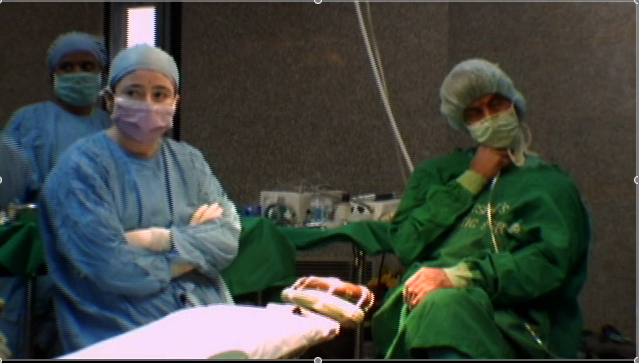

|
Flying On One Engine - Trailer
Produced by: Weinstein Film Production
Directed by: Joshua Weinstein
Editor: Hemal Trivedi
Location: India/New York
Year: 2008
Length: 1:30
Website: flyingononeengine.com
Wheelchair bound, without a larynx, and diagnosed with a
life-threatening aortic aneurysm, Dr. Sharadkumar Dicksheet
now lives only (and barely) so he can travel to India to
perform free operations in marathon-like surgery sessions
where up to 700 children receive treatment for their cleft
lips and other deformities. Although Dicksheet survives off
of social security while living in his Brooklyn apartment,
his life is drastically different in India where the
eight-time Nobel Prize nominee is treated like a living god.
FLYING ON ONE ENGINE shows how this quirky, funny, and
sometimes difficult character overcomes his own ailments
by curing others.
|